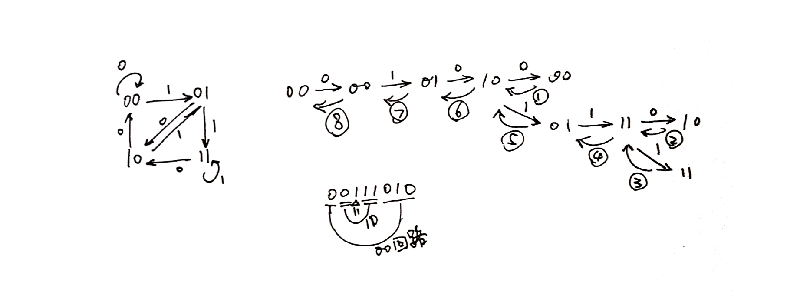

本文考虑无向图下的欧拉回路，基于 Leetcode.753 对应的一个例子进行解释
欧拉回路的判定
一个图上的 欧拉回路 指一条首尾相连的路径，该路径经过图上每条边，且只经过每条边一次。
一个图如果有欧拉回路，必需满足：
- 每个顶点的度为偶数 ( 每个顶点的边有偶数条 )。
欧拉回路的求解
深度优先搜索 ( DFS )
确定一个图有欧拉回路后，取一个顶点开始进行 DFS，搜索时，要记录每条边的访问情况，去掉已经访问的边。
下面举一个实际的例子。下图中左边的图是一个包含欧拉回路的图，求出欧拉回路的路径。

该图的每个结点为一个长度为 2 的字符串，内容为所有 2 位二进制数，边有两种 “0” 边或 “1” 边。描述如下：
1 | Node = {"00", "01", "10", "11"} |
每个节点有两个出边 “0” 和 “1”。每个边指向的下一个点为，当前点去掉第一个字符后的串加上边上的值形成的字符串所在的点：
1 | "00" -"1"-> "00".slice(1) + "1", 即 "00" -"1"-> "01" |
使用 DFS 找出这张图的欧拉回路的核心代码如下：
1 | const dfs = n => { |
使用该方法的到的是路径的边的序列的逆序(将上面的 path += i 改为 path = i + path 可以的到正序边)。图中的例子得到的结果为：
1 | 00111010 |
图中右边还给出了具体的分析，来说明该方法记录路径的方法。图中向右的箭头表示递归调用，向左的箭头表示递归结束回退。
在进行解释之前，需要了解一下在有欧拉回路的图上进行 DFS 时的特点，即
- 从一个点出发，如果出现的回退，说明出现了回路。
图中出现了三次回退：
- 从 00 出发回到 00，此时回退到了 10
- 从 10 出发回到 10，此时回退到了 11
- 从 11 出发回到 11，此时回退到了 11, 并一路回退到了 00 ( 因为会退到的点都已经没有还没 visit 的边了 )
得到欧拉路径 (欧拉回路的目的是遍历所有的边) 的方式如下：
- 先得到了一条 00 到 00 的路径：
1 | 00 -0-> 00 -1-> 01 -0-> 10 -0-> 00, |
- 又得到了一条 10 到 10 的路径：
1 | 10 -1-> 01 -1-> 11 -0-> 10 |
- 最后得到了 11 到 11 的路径：
1 | 11 -1-> 11 |
- 将 11 回路加入到 10 回路：
1 | 10 -1-> 01 -1-> 11 -1-> 11 -0-> 10 |
- 将 4 中的回路加入到 00 回路中：
1 | 00 -0-> 00 -1-> 01 -0-> 10 -1-> 01 -1-> 11 -1-> 11 -0-> 10 -0-> 00 |
总结起来递归的过程简单理解为寻找嵌套回路，比如：
第一条回路：
1 | abcdefga |
这是回路，但不包含所有的边，所以看有没有嵌套的回路：比如退到 f 发现可以展开，根据已知的条件，从 f 出发，一定会回到 f，所以，从 f 出发可能得到一个这样的回路
1 | fhf |
把这个路径加入到一开始的回路可以得到
1 | abcdefhfga |
这个回路比一开始的回路遍历了更多的边，所以，不断地使用这样的方法展开回路，如果一个图有欧拉回路，最终所有的边一定可以被遍历。
图中还说明了每个边输出的顺序，使用带圈的 1, 2, 3 … 表示。程序中输出语句放在了递归之后，因此相当于利用递归栈记录了路径。
例程中输出的顺序如下：
1 | 第一个回路后半(1) -> 第二个回路后半(2) -> 第三个回路(3) -> 第二个回路前半(4, 5) -> 第一个回路前半(6, 7, 8) |
最终得到逆序的路径：
1 | 00111010 |
Fleury ( 佛罗莱 ) 算法 [TODO]
参考资料
Leetcode.753 - cracking-the-safe